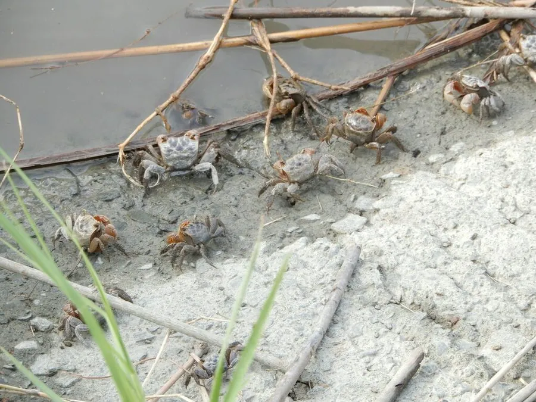

甲壳动物 · 动物界
无齿螳臂相手蟹 Chiromantes dehaani

螯足橙红、掌节内侧无齿的小型相手蟹，栖于河口芦苇滩与红树林，取食植物碎屑，掘洞损坏堤岸。
- 分类
- 门节肢动物门纲软甲纲目十足目科相手蟹科属螳臂相手蟹属
- 栖息环境
- 河口芦苇滩、红树林、潮间带泥滩与养殖塘堤岸
- 地理分布
- 中国长江口以南至华南沿海，及朝鲜半岛、日本
- 保护级别
- 常见种，无保护需求；围垦区视为有害蟹类
物种志
无齿螳臂相手蟹的头胸甲宽约三至四厘米，近方形，背甲深褐至灰绿，表面有细颗粒。螯足粗壮，呈橙红色，掌节内侧没有明显的齿，无齿之名由此而来。步足侧扁，末对足桨状，能在泥滩上快速横行。它的双螯常举在身前，像螳螂的前臂，螳臂之名便由此而来。
它分布于中国长江口以南至华南沿海，以及朝鲜半岛和日本，栖息在河口芦苇滩、红树林和潮间带泥滩，掘洞而居。它以芦苇、互花米草等植物的碎屑和底栖小动物为食，也取食动物尸体，退潮后成群出洞。它是河口湿地数量极大的蟹类，既是鸟类和鱼类的食物，也因掘洞削弱堤岸和养殖塘，在围垦区被视为有害种。
形态与习性
- 甲宽约三至四厘米，近方形
- 螯足粗壮呈橙红色，掌节内侧无齿
- 步足侧扁，末对足桨状
- 食性植物碎屑、底栖小动物与动物尸体
- 栖息河口芦苇滩与红树林，掘洞而居
- 影响掘洞削弱堤岸与养殖塘
趣味知识
- 它那对橙红色的螯举在胸前，活像缩小版的螳螂前臂。
- 芦苇滩上成片的洞口多半是它挖的，退潮时成群出来捡食碎屑。
- 它既喂饱了水鸟，又挖坏了堤坝，在围垦区是让人又爱又恨的角色。